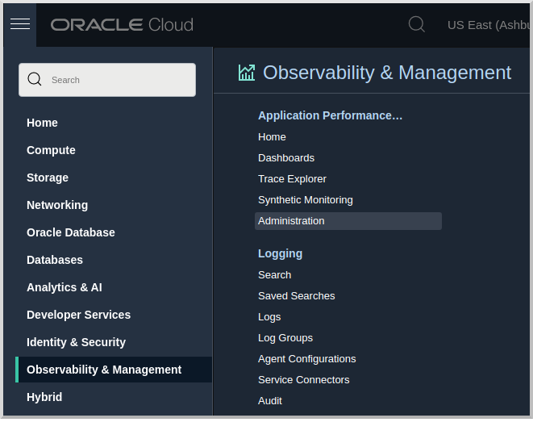
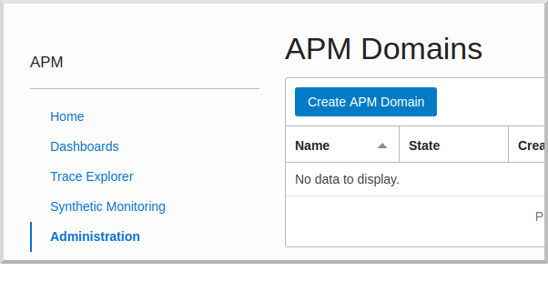
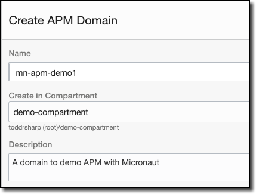
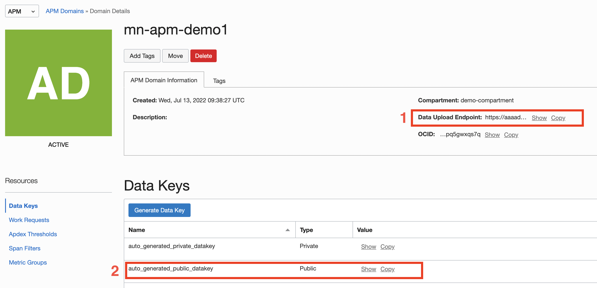
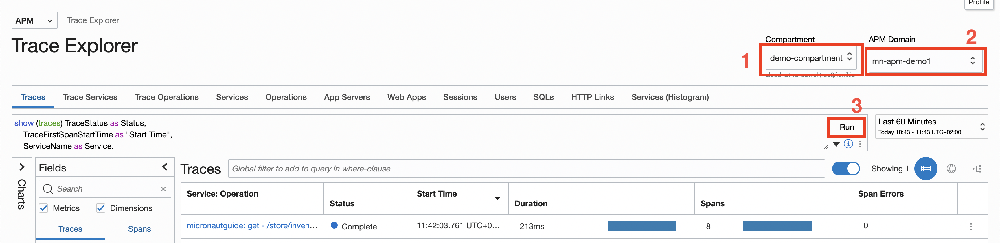
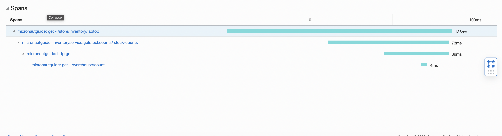
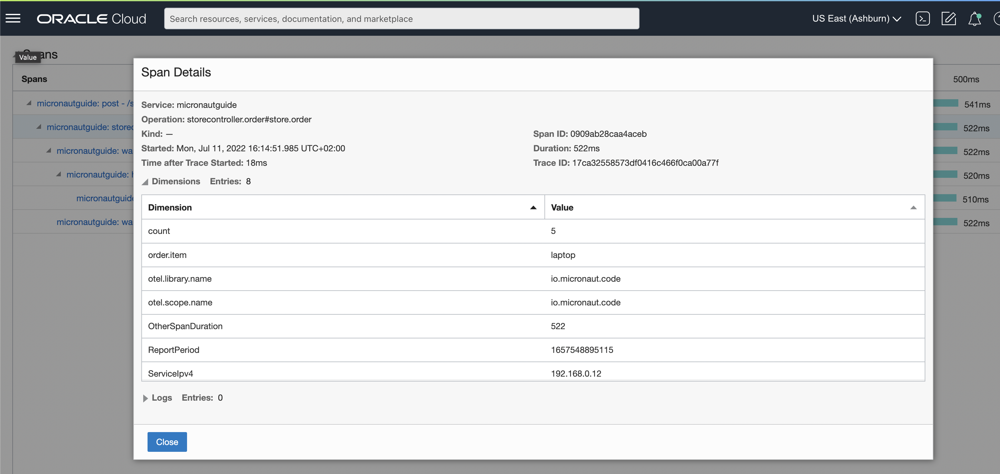
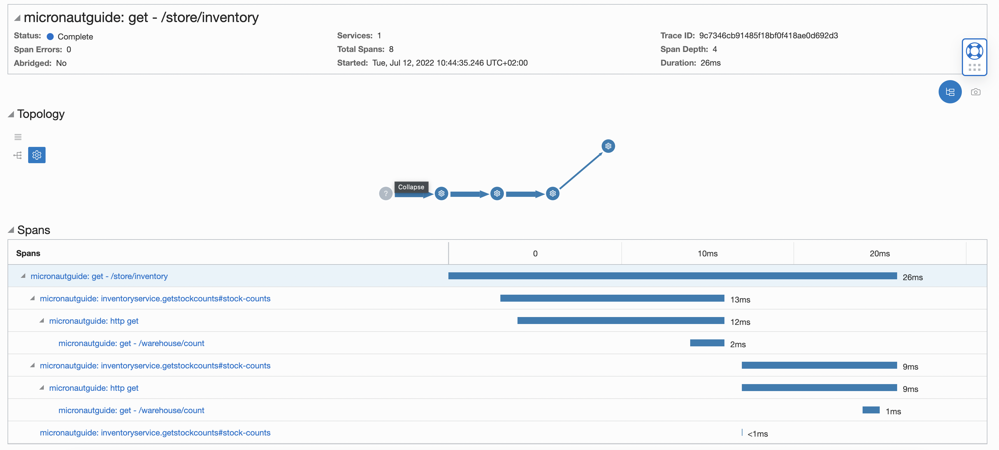

OpenTelemetry Tracing with Oracle Cloud and the Micronaut Framework
Use Oracle Cloud to investigate the behavior of your Micronaut applications.
On this guide
In this section
Getting Started
In this guide, we will create a Micronaut application written in Java.
In this guide, you will discover how simple it is to add tracing to a Micronaut application.
Tracing allows you to track service requests in a single application or a distributed one. Trace data shows the path, time spent in each section (called a span), and other information collected along the way. Tracing gives you observability into what is causing bottlenecks and failures.
What you will need
To complete this guide, you will need the following:
-
Some time on your hands
-
A decent text editor or IDE (e.g. IntelliJ IDEA)
-
JDK 21 or greater installed with
JAVA_HOMEconfigured appropriately -
An Oracle Cloud account (create a free trial account at signup.oraclecloud.com)
Solution
We recommend that you follow the instructions in the next sections and create the application step by step. However, you can go right to the completed example.
-
Download and unzip the source
Writing the Application
Create an application using the Micronaut Command Line Interface or with Micronaut Launch.
mn create-app example.micronaut.micronautguide \
--features=tracing-opentelemetry-zipkin,http-client \
--build=maven \
--lang=java \
--test=junit
If you don’t specify the --build argument, Gradle with the Kotlin DSL is used as the build tool. If you don’t specify the --lang argument, Java is used as the language.If you don’t specify the --test argument, JUnit is used for Java and Kotlin, and Spock is used for Groovy.
|
The previous command creates a Micronaut application with the default package example.micronaut in a directory named micronautguide.
If you use Micronaut Launch, select Micronaut Application as application type and add tracing-opentelemetry-zipkin, and http-client features.
| If you have an existing Micronaut application and want to add the functionality described here, you can view the dependency and configuration changes from the specified features, and apply those changes to your application. |
OpenTelemetry
Micronaut Framework uses OpenTelemetry to generate and export tracing data.
OpenTelemetry provides two annotations: one to create a span and another to include additional information in the span.
- @WithSpan
-
Used on methods to create a new span; defaults to the method name, but a unique name may be assigned instead.
- @SpanAttribute
-
Used on method parameters to assign a value to a span; defaults to the parameter name, but a unique name may be assigned instead.
@WithSpan and @SpanAttribute can be used only on non-private methods.
If these annotations are not enough, or if you want to add tracing to a private method, Micronaut Framework’s tracing integration registers a io.opentelemetry.api.trace.Tracer bean, which exposes the OpenTelemetry API and can be dependency-injected as needed.
|
The following `io.micronaut.tracing.annotation`s are available if you prefer to use them or if you are working on an existing Micronaut application that already uses them.
|
Inventory Service
Store Controller
This class demonstrates use of the io.micronaut.tracing.annotation instead of the OpenTelemetry annotations.
|
If you have the following dependency declared, all HTTP server methods (those annotated with |
Warehouse Client
You can also mix OpenTelemetry and Micronaut Tracing annotations in the same class.
|
If you have the following dependency declared, all HTTP client methods (those annotated with |
Warehouse Controller
The WarehouseController class represents an external service that will be called by WarehouseClient.
Create APM Domain
Open the Oracle Cloud Menu and click "Observability & Management", and then "Administration" under "Application Performance…":

Click "Create APM Domain":

Name your domain, choose a compartment, and enter a description.

Once the domain is created, view the domain details. Here you’ll need to grab a few values, so copy the data upload endpoint (#1) and public key (#2).

Now you have what you need to construct a URL to use in the application configuration files. The Collector URL format requires you to construct a URL by using the data upload endpoint as the base URL and generating the path based on some choices, including values from the private or public key. The format is documented here. Once you’ve constructed the URL path, add it to your application.properties configuration.
Configure Tracer
Use Micronaut CLI or Launch to create your application. You will see that the necessary OpenTelemetry configuration is automatically added to your application.properties file. You will have to change the value of the Zipkin endpoint configuration variable.
Run the Application
The application can be deployed to Oracle Cloud.
Traces can be sent to the Oracle Cloud APM Trace Explorer from outside Oracle Cloud.
This allows us to run the application locally and see the traces in the Oracle Cloud APM Trace Explorer.
To run the application, use the ./mvnw mn:run command, which starts the application on port 8080.
Traces
Open the Oracle APM Tracing Explorer. Once the page is loaded, select the compartment that you selected in the previous step (#1), choose the APM domain that you created (#2), and run the query (#3).

If your traces aren’t displayed yet, give it a moment. It takes a few seconds for the traces to show up in the explorer. If no spans show up, run the query again by pressing the "Run" button.
Get Item Counts
curl http://localhost:8080/store/inventory/laptop
Each span is represented by a blue bar.
Order Item
curl -X "POST" "http://localhost:8080/store/order" \
-H 'Content-Type: application/json; charset=utf-8' \
-d $'{"item":"laptop", "count":5}'
Selecting a different span will show you the labels (a.k.a. attributes/tags) and other details of the span.
Get Inventory
curl http://localhost:8080/store/inventory
Looking at the trace, we can conclude that retrieving the items sequentially might not be the best design choice.
Next Steps
Read more about Micronaut Tracing.
Read more about Micronaut Oracle Cloud integration.
License
| All guides are released with an Apache License 2.0 for the code and a Creative Commons Attribution 4.0 license for the writing and media (images). |